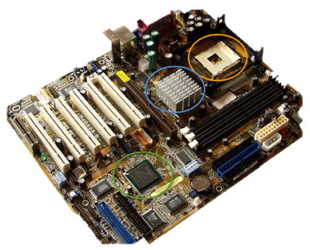
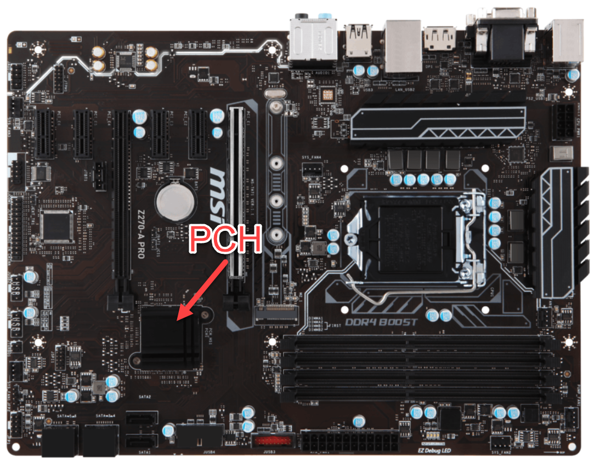

De volledige werking van de chipset bespreken zou ons véél te ver leiden. Het enige wat je voorlopig moet onthouden is dat we een onderscheid maken tussen moederborden die gemaakt zijn voor +- 2011 en moederborden die gemaakt zijn erna. Deze vergelijking gaat natuurlijk niet helemaal op maar we beschouwen dit als een didactische vereenvoudiging.
In moederborden gemaakt voor 2011 bestaat de chipset uit een northbridge en een south bridge.
De northbridge staat in direct contact met de snelle apparaten zoals de processor (CPU), het werkgeheugen (RAM) en de grafische kaart (GPU).
De southbridge staat dan weer in direct contact met de tragere apparaten zoals de BIOS, de PCI Express bus, USB poorten, de harde schijven, het CD-ROM station, ...
Op een moederbord zijn de north- en southbridge telkens heel eenvoudig te herkennen.

Omcirkeld in het oranje zie je de plaats waar de processor komt te zitten ofwel de socket genoemd.
In het blauw zie je de northbridge. Deze staat altijd in de nabijheid van de processor, het RAM geheugen, de aansluiting voor de grafische kaart en de PCI-Express aansluitingen.
In het groen zie je de southbridge. Deze staat altijd in de nabijheid van de BIOS (Basic Input Output System), de aansluitingen voor de harde schijven en de aansluitingen voor Universal Serial Bus (USB).
Het belang van de chipset is niet te onderschatten, het is een kruispunt waar alles samenkomt. Werkt de chipset niet naar behoren, dan heeft een snel werkende processor weinig zin. Het spreekt voor zich dat de mogelijkheden van een computer ook afhangen van de chipset.
In een moderne computer (> 2011) zijn northbridge en southbridge ondertussen verdwenen. De taken van de northbridge zitten nu in de processor zelf, en die van de southbridge in een enkele chip op het moederbord, de Platform Controller Hub (PCH). De trend is om alle logica onder te brengen binnenin de processor zelf. Dit verlaagt het energieverbruik en verhoogt de snelheid.
Het woord chipset is wel gebleven. Het duidt de ondersteunende chips op het moederbord aan, en waar dat er voor 2011 twee waren, is het er vandaag nog een: lees je bij een modern moederbord over zijn chipset, dan gaat het over die ene PCH.
In onderstaande figuur van een modern moederbord zie je rechts de processorsocket en links de PCH.
